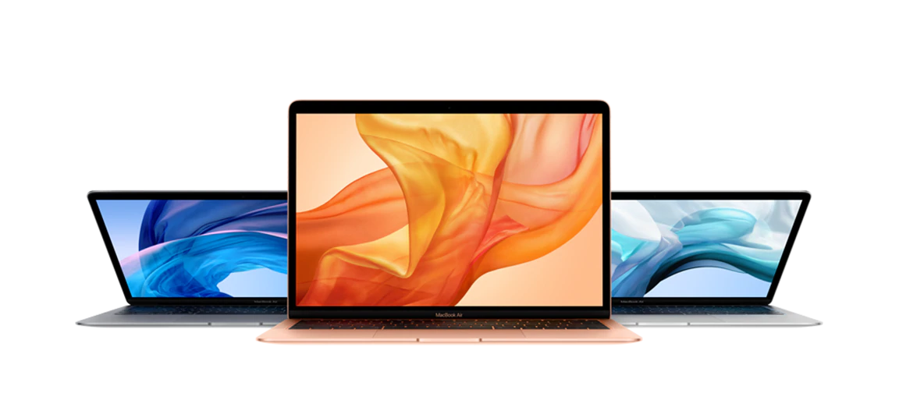
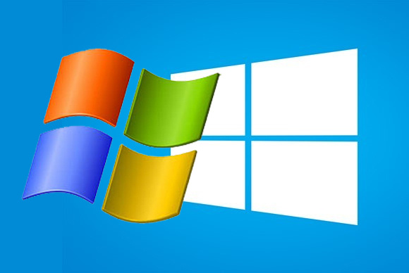
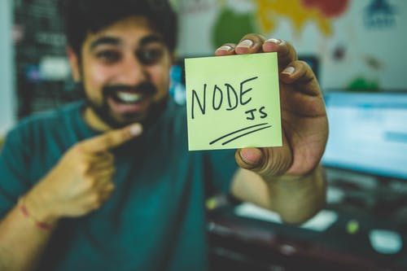
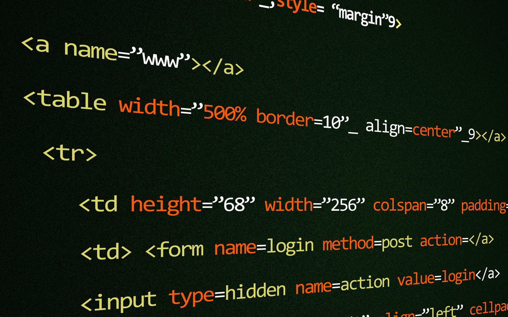

<link href="https://fonts.googleapis.com/css?family=Anton&display=swap" rel="stylesheet">
<ion-content >
  <div class="flex-container">
  <div class="flex-container0">
    <ion-input type="text"  placeholder="Search profile" style="flex-basis:50%;flex: 1; background-color: white; margin: 7px">
    </ion-input>
    <div ion-fab style="height: 60%; background-color: white"> <button ion-button color="light" style="flex: 1; "><ion-icon name="ios-search"></ion-icon> </button> </div>
    <div ion-fab style="height: 60%; background-color: white"> <button ion-button color="light" style="flex: 1; "><ion-icon name="chatboxes"></ion-icon></button> </div>
    <div ion-fab style="height: 60%; background-color: white"> <button ion-button color="light" style="flex: 1; "><ion-icon name="home"></ion-icon></button>  </div>
  </div>

  <div class="flex-container1">
      <div style="width: 70%; margin: auto; text-align: center; font-size: 20px;font-family: 'Anton', sans-serif; color: rgb(0, 0, 0); ">David "Mr Code" Henderson </div>
      <div style="width: 40%; margin-left: 30% ;text-align: center; font-size: 15px;font-family: 'Anton', sans-serif; color: rgb(42, 40, 58);">Programmer</div>
  </div>
  <div class="flex-container2">

    <div>
    <div style="width: 50px;height:50px; margin-top: 0px; margin-left: 5px; "> </div>
        <div style="width: 70%;height:20px; margin-top: -50px; margin-left: 60px; font-size: 12pt">Black and white(pty)ltd</div>

        <div style="width: 60%;height:20px; margin-top: 10px; margin-left: 75px;">We are more than just programmers</div>
        <div style="width: 95%;height:20vh;  margin-top: 15px; margin-left: 10px; overflow: auto ">Lead programmer with a track record of incorporating user and business requirements into cost-effective, secure and user-friendly solutions known for scalability and durability.
            Knowledge of commercial and open source software/database engineering tools, design techniques, CASE tools and security standards.
            Proven leader and project manager; drive system architecture decisions and lead projects from concept through the release process.
            Innovator of next-generation solutions, systems and applications giving companies a competitive edge and producing outstanding results for customers.</div>
    </div>
    <div class="gallery">
    <div> </div>
    <div></div>
    <div></div>
    <div></div>
    <div></div>
    <div></div>
    <div></div>
    <div></div>
    <div></div>
    <div></div>
    <div></div>
    <div></div>
  </div>

  </div>


</div>
</ion-content>
